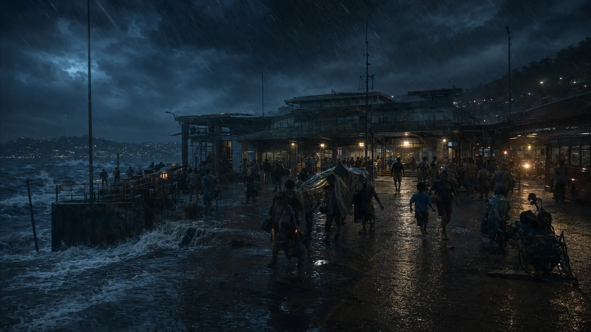
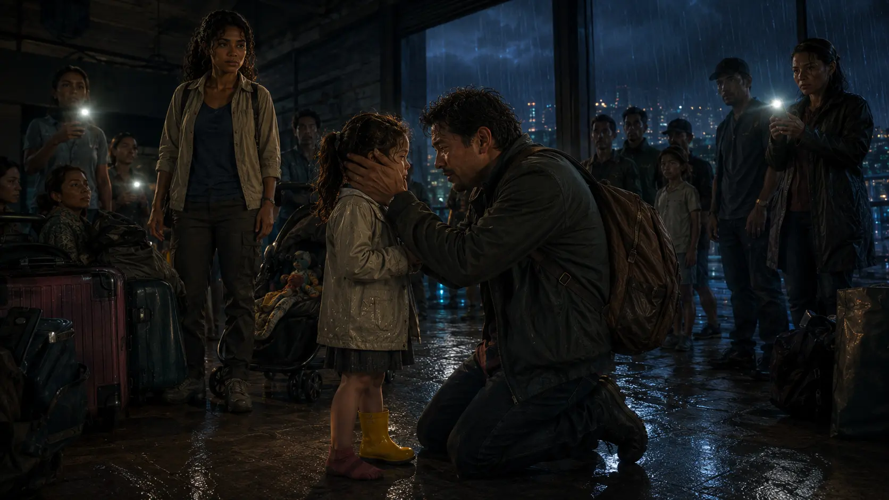

The Yellow Boot
Harbour Link Terminal · Port Moresby · storm evening
By the time the lights failed, Nara had already made three promises: the insulin cooler would reach Boroko Clinic below eight degrees, the eggs would reach home mostly unbroken, and she would not volunteer for one more emergency that was not hers.
The terminal went black before she could break the third.
A public-address voice died mid-syllable. Three hundred people tried to move before any of them knew where. Nara’s trolley struck a bench. A suitcase fell. Somewhere near the floor, a child began to scream.
The crowd did what crowds do when nobody can see the next safe action. It tried to become one body.
Nara saw the yellow boot because logistics had trained her to see what systems lose at their edges.
It lay beneath the dead departures board, bright in the beam of a fallen phone. Two adult shoes nearly came down on it. Nara hooked it toward her with one finger, crouched, and followed the line of the crowd.

Three metres away, a stroller had turned sideways. A man held its handle with both hands while bodies pressed around him. Inside sat a little girl with one yellow boot and one red-socked foot.
The child was not lost. The crowd had simply stopped seeing her.
Nara lifted the boot over the phone light.
Whose?
Mina’s.
Can you hear her breathing?
What?
Mina. Can you hear her?
He bent until his ear was near his daughter’s face. The scream had broken into quick, wet gasps.
Yes.
Then match it. Don’t look at me. Two counts in, two out. Keep one hand where she can feel you.
He released the stroller with one hand and laid it against Mina’s chest.
Nara turned to a woman pinned beside the wheel.
Will you move half a shoe-length?
The woman stared at her.
Not forever. Just until her stroller can turn.
The woman moved half a step. Someone behind her adjusted. The stroller wheel came free. A pocket of air appeared around Mina as if the crowd had remembered that bodies were not floodwater.

Then something coughed inside the west wall.
The smell of hot wiring spread through the terminal. Rainwater slid beneath the outer doors in a black sheet. At the centre of the hall, a senior security guard raised a bullhorn. His thumb found the siren switch.
Panic had acquired a reason.